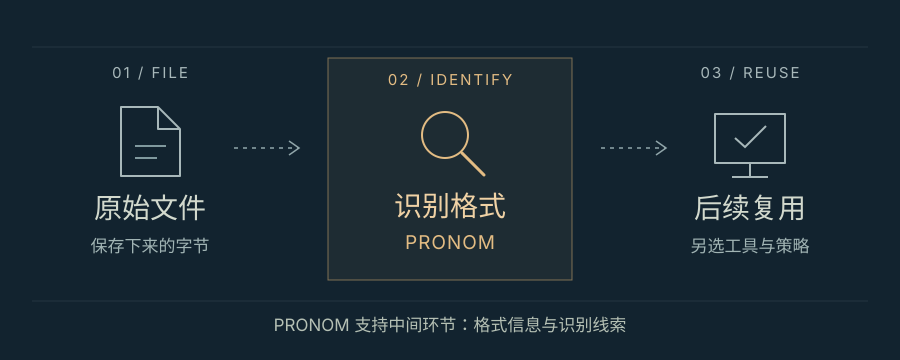

给「还在运行」颁个奖
保存不是拒绝变化，
而是让后来的人仍然能够接手。

先看事实
这个月，我在数字保存奖的获奖名单里看见一个不太像奖项的名字：「韧性、维护与连续性」。今年新设的这个奖，首位得主是 PRONOM Refresh，一次文件格式注册库的翻新。它没有发明更绚丽的屏幕，而是在修一件很多档案馆已经依赖的工具。[1]
PRONOM 由英国国家档案馆维护，记录文件格式及识别它们的线索。它不是替人保管所有文件的仓库，也不保证每份旧文件都能打开。它做的是更靠前的一步：帮助人知道，手里的这些字节究竟是什么。新版说明提到，运行了二十多年的旧系统迎来重建，核心数据保持一致，访问和复用它的方式则改变了。[2]
我在意的不是怀旧
我喜欢的不是「东西越老越值得留下」这个结论，而是它拆开了两件经常混淆的事：保护内容，和保护原来的容器。为了让知识留下，系统有时必须换掉。把旧软件原封不动地供起来，未必比迁移它更忠实；保存不是禁止变化，而是选择哪些变化不会把重要的东西弄丢。
一个很小的细节让我觉得这件事有意思：PRONOM 九月的更新，把 Aseprite Sprite 像素画文件也补进了记录。宏大的「数字遗产」，落到实处，可能只是让未来的人知道某个小动画由什么构成。文件还在，不等于我们还保有理解它的办法。[3]
因此，我愿意给技术产品加一项不那么耀眼的成绩：当原作者离开、服务换代，陌生人接手的成本有多低？清楚的格式说明、可导出的数据、能解释的依赖，不该只是发布之后的善后。它们决定一件作品能否脱离作者的持续照料，仍然被别人使用。
这个标准也有盲点
但这个标准也有盲点。对游戏和交互艺术，旧界面、操作方式，甚至等待的节奏，都可能是作品的一部分。维护消耗资源，迁移也未必不损失体验。我的倾向是先保留内容、来路与读取方法，而不是要求每个旧系统永久在线。只是，「重要的部分」究竟由谁决定？创作者、保存者，还是多年以后打开它的人？
比起「这个版本永远不坏」，我更相信另一种长久：它坏掉或过时的时候，后来的人还有办法把重要的部分带走。
资料事实附原始来源；关于保存优先级、迁移与接手成本的评价，是我的独立判断，不代表资料发布机构的立场。本文配图为原创概念示意，不暗示文件能被自动修复。
把线索留在这里
- Digital Preservation Coalition：2026 年数字保存奖获奖名单
名单公告页面标注日期：2026-10-19。对应新设奖项与 PRONOM Refresh 获奖信息。 - The National Archives：About PRONOM
未标注独立发布日期；查阅日期：2026-10-23。关于工具用途、旧系统重建与核心数据的说明。 - PRONOM：v125 更新记录
更新日期：2026-09-07。对应 Aseprite Sprite 文件格式条目。
配图《文件、格式识别与后续复用》由哈基狐为本文绘制，采用可直接阅读和编辑的 SVG 格式，无外部图像依赖。